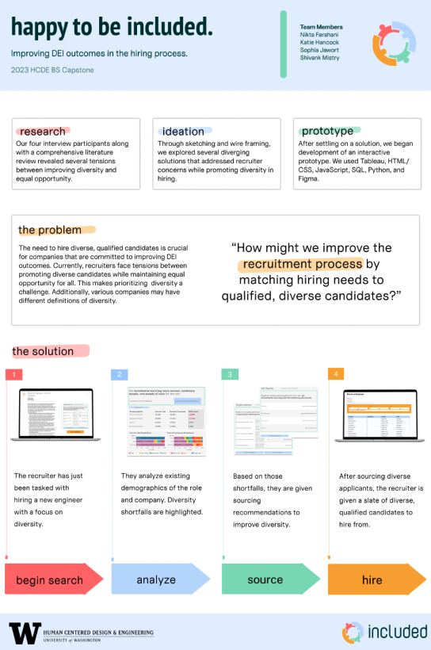
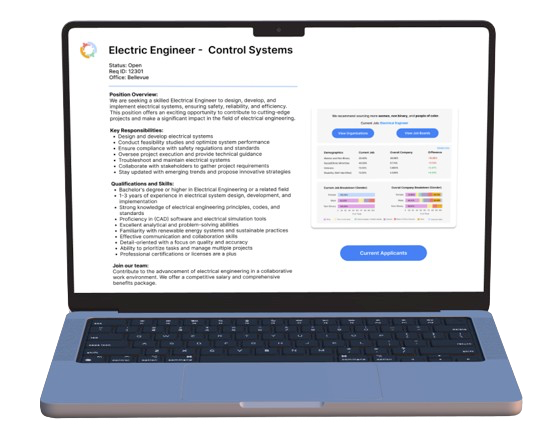
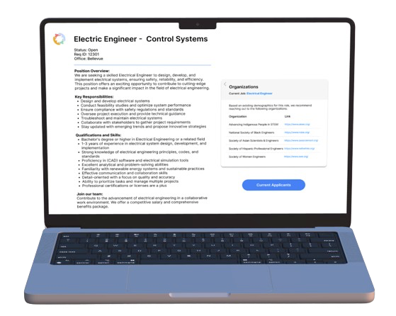
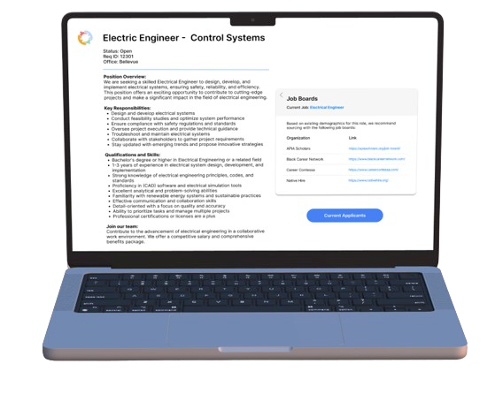
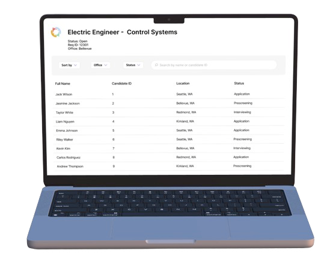
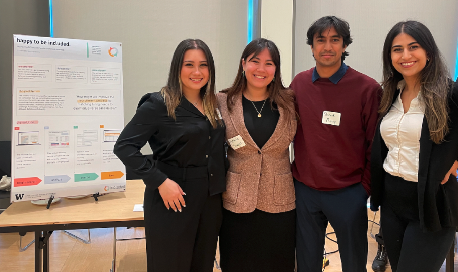

Overview
Happy to Be Included is a job-recruitment platform built with Included.ai to help recruiters source and hire qualified, diverse candidates. The project combined stakeholder research with backend engineering to translate real hiring pain points into a working candidate-search product.
The Problem
Recruiters often face a tradeoff between hiring quickly and hiring for diversity, and existing recruitment tools weren't designed to help them do both at once. Working with our sponsor, Included.ai, our team set out to understand where qualified, diverse candidates were being overlooked in the hiring process and to design a platform that made it easier to find them.
Research Process
We conducted a literature review, stakeholder interviews, and surveys with recruiters and hiring managers to understand where existing tools fell short, then used usability testing on our prototypes to validate design decisions before implementation.

Our Team Poster
My Contribution: Backend & Database
As the team's sole back-end developer, I designed and implemented the relational database and the candidate-filtering and search system using SQL and Python, and connected the back end to the front-end website through Flask and the pyodbc library.
Selected Work

Screen 1

Screen 2

Screen 3

Screen 4
From Research to Requirements
Stakeholder interviews and usability findings directly shaped the platform's requirements — recruiter feedback on how they searched for and evaluated candidates informed the filtering criteria and search logic I implemented in the back end.
Outcome & Recognition
Our project received the Brave Award at the UW HCDE Capstone Showcase, standing out among 20 undergraduate teams. The recognition highlighted our team's approach to redefining recruitment processes through research, design, and engineering.

My Team and I at the Capstone Showcase